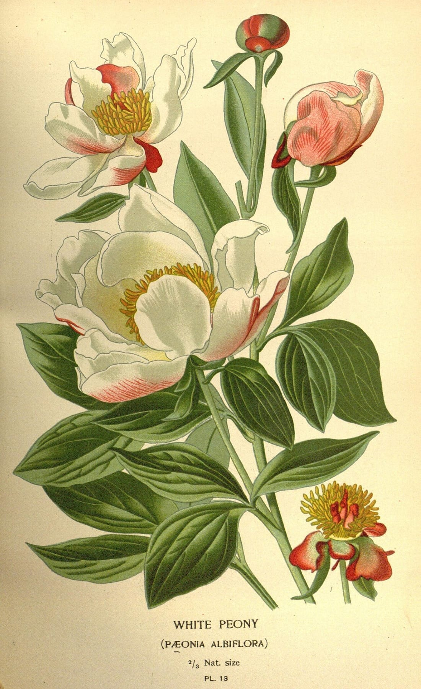
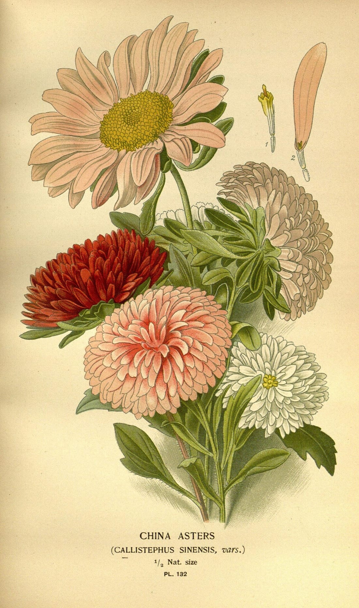

사업·임팩트
꽃을 고르는 귀찮음을 줄이고,
꽃을 살 새로운 이유를 만듭니다
사용자 가치
한 번의 흐름에서 꽃·의미·안전·문구·구매 해결
인기순이 아니라 관계와 상황에 맞는 선택
반려동물에게 위험한 꽃 선물을 사전에 방지
“왜 이 꽃인지” 자신의 말로 설명 가능
사업 모델 구매 전환에서 시작해 도구·API·프리미엄으로 넓힌다
1
STAGE 01
꽃 판매처·지역 꽃집 제휴 및 구매 전환
2
STAGE 02
지역·수령일 기반 꽃집 예약·문의
3
STAGE 03
꽃집 고객 상담용 추천 도구
4
STAGE 04
선물 플랫폼·꽃 쇼핑몰용 추천 위젯 / API
5
STAGE 05
관계 기록·기념일 알림·고급 편지 프리미엄

화훼산업 연결
5,344억 원
2024년 국내 화훼류 생산액 · 2015년보다 명목 기준 약 15% 낮음
기념일 밖의 구매 계기 확대
익숙하지 않은 품종 발견
지역 꽃집으로 연결
관계·상황별 수요 데이터 축적
출처 · 국립원예특작과학원 「원예작물별 산업 생산액」 (2024년 534.4십억 원, 2015년 629.8십억 원)
초기 검증 지표 지어낸 실적이 아니라, 출시 후 확인할 목표 가설
추천 완료율
60% 이상
추천 적합도
4.0/5 이상
메시지·편지 행동률
20% 이상
저장·공유율
15% 이상
구매처 이동률
10% 이상
DearBloom은 꽃을 판매하는 서비스보다 먼저, 꽃을 선택할 이유를 만들어 주는 서비스입니다.
사업·임팩트
05/05